00Tre regole da ricordare sempre
Leggile adesso, valgono per tutto il corso
- Guarda il prompt prima di ogni comando. La riga del terminale che finisce con
>ti dice dove sei. Deve finire con il nome della cartella della lezione, per esempioPS C:\Users\nome\Desktop\Python_Pro\Lezione_01>. Se sei nella cartella sbagliata, i comandi fanno danni nella cartella sbagliata. - Dopo aver installato qualcosa, chiudi e riapri. I terminali e VS Code già aperti non vedono i programmi appena installati. Chiudi tutto e riapri: risolve metà dei "comando non riconosciuto".
- Leggi la finestra prima di cliccare. Molte finestre hanno già selezionata l'opzione sbagliata. In questa guida trovi la scelta giusta per ognuna.
01Pulizia: se hai già provato a installare
Salta questo passo solo se sul PC non hai mai installato Python
Python installato due volte, in due modi diversi, è la causa più comune dei problemi. Prima di installarlo di nuovo, togliamo tutto.
Controlla cosa c'è
- Apri Start, scrivi PowerShell e premi Invio.
- Lancia questi comandi, uno alla volta:
python --version py list where.exe python
Se tutti danno errore o rispondono "Python non è stato trovato; eseguire senza argomenti da installare dal Microsoft Store…", Python non c'è. Vai al passo 02.
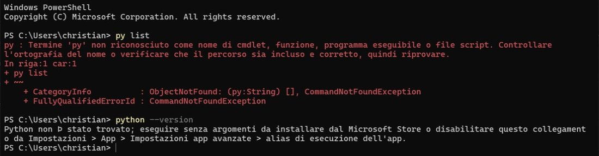
python che rimanda allo Store è un "finto Python" che Windows ha di serie. A volte la è appare come Þ: è solo un problema di visualizzazione.Disinstalla
- Se
py listha mostrato qualcosa, togli prima i Python gestiti da lì:PowerShellSe chiede conferma, rispondipy uninstall --purge
y. - Apri Impostazioni → App → App installate (su Windows 10: Impostazioni → App → App e funzionalità), cerca
pythone disinstalla tutto quello che compare: Python 3.x, Python Install Manager, Python Launcher.
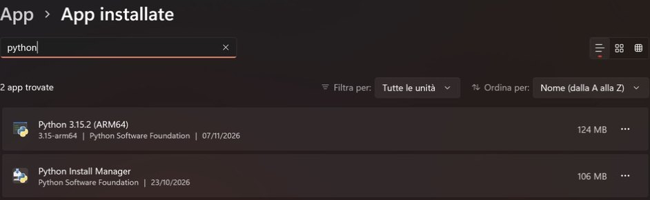
Cancella i residui
Disinstallare non basta: restano cartelle che confondono la prossima installazione. Chiudi PowerShell, riaprilo e incolla:
Remove-Item -Recurse -Force -ErrorAction SilentlyContinue "$env:LOCALAPPDATA\Python", "$env:LOCALAPPDATA\Programs\Python", "$env:LOCALAPPDATA\pip", "$env:USERPROFILE\.virtualenvs"
Disinstallando VS Code restano le sue impostazioni ed estensioni. Per ripartire da zero, dopo averlo disinstallato cancella anche quelle:
Remove-Item -Recurse -Force -ErrorAction SilentlyContinue "$env:APPDATA\Code", "$env:USERPROFILE\.vscode"
py list deve dire "non riconosciuto" e python --version deve mostrare il messaggio del Microsoft Store. Allora sei pulito.02Installare Python
Circa 5 minuti
- Vai su python.org/downloads.
- Non cliccare il grande pulsante giallo. Clicca il link piccolo nella riga sotto: "Or get the standalone installer for Python 3.15.x".
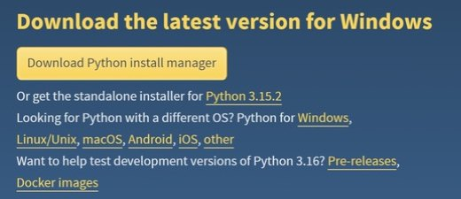
- Parte il download di
python-3.15.x-amd64.exe. Aprilo. - Spunta "Add python.exe to PATH", in basso. Lascia vuota l'altra casella.
- Clicca Install Now. Alla fine, se compare il pulsante Disable path length limit, cliccalo. Poi Close.
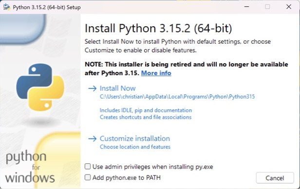
python non funziona.Verifica
Chiudi tutte le finestre di PowerShell e aprine una nuova, poi:
python --version where.exe python pip --version
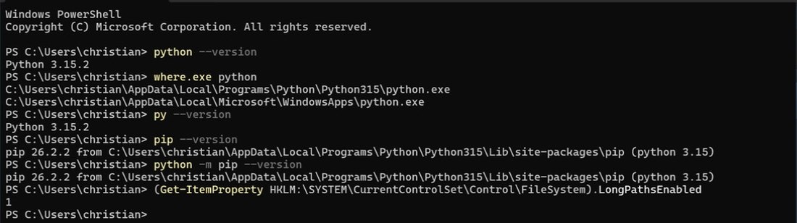
where.exe python deve essere la cartella ...\Programs\Python\Python315. Se il primo è WindowsApps, la casella PATH non era spuntata: torna al passo 01.03Impostazioni da fare una volta sola
2 minuti, valgono per sempre su questo PC
Nello stesso PowerShell lancia questi tre comandi, uno alla volta.
1. Permetti gli script degli ambienti virtuali
Set-ExecutionPolicy -Scope CurrentUser -ExecutionPolicy RemoteSigned
RemoteSigned permette gli script creati sul tuo PC e continua a bloccare quelli scaricati non firmati. È l'impostazione consigliata da Microsoft per chi programma, e vale solo per il tuo utente.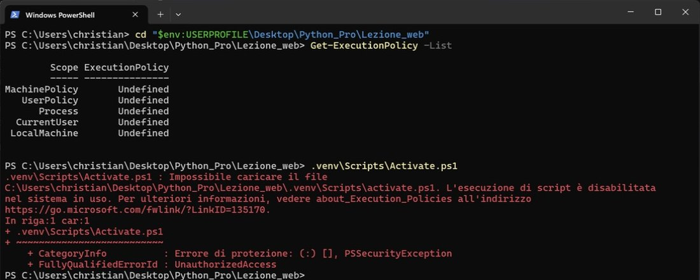
2. Fai creare gli ambienti dentro la cartella della lezione
[Environment]::SetEnvironmentVariable("PIPENV_VENV_IN_PROJECT", "1", "User")M3L1-a1B2c3D4. Dopo qualche lezione VS Code ti mostra una lista di interpreti tutti uguali e non sai quale scegliere. Con questa impostazione l'ambiente finisce in una cartella .venv dentro la lezione, e VS Code lo trova subito.3. Installa pipenv
pip install pipenv
Deve finire con "Successfully installed … pipenv-…". La riga "[notice] A new release of pip is available" non è un errore: ignorala.
pipenv --version: deve rispondere con un numero di versione.04Installare VS Code
Prima di Git: l'ordine conta
- Vai su code.visualstudio.com e scarica la versione per Windows. Il file si chiama
VSCodeUserSetup-x64-….exe. - Accetta la licenza e lascia la cartella proposta.
- Nella schermata Selezione processi aggiuntivi spunta tutte le caselle.
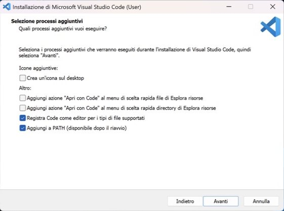
- Nella schermata GitHub Copilot CLI, in inglese, scegli "Don't add the copilot command". Non serve per il corso.
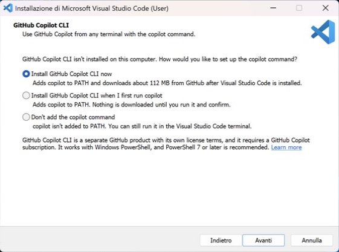
- Finisci l'installazione e apri VS Code. Se a destra c'è il pannello Chat, chiudilo con la ×.
VS Code in italiano
Premi Ctrl+Shift+P, scrivi Configure Display Language, scegli Italiano (Italian) e poi Restart. Il resto della guida usa i nomi italiani dei menu.
Estensione Python
Premi Ctrl+Shift+X, cerca Python e installa quella di Microsoft, con la spunta blu. Insieme arrivano anche Python Debugger e Python Environments.
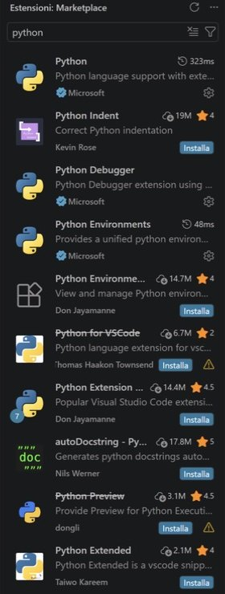
05La cartella del corso
Una volta, all'inizio del corso
- Crea sul Desktop una cartella
Python_Pro. Usa nomi senza spazi e senza lettere accentate, per questa e per tutte le cartelle dentro. - Apri la cartella e clicca nella barra dell'indirizzo di Esplora file. Se il percorso contiene
OneDrive, crea la cartella da un'altra parte, per esempio direttamente inC:\Users\tuonome\. OneDrive sincronizza i file mentre lavori e può bloccarli o duplicarli. - Dentro
Python_Procrea una cartella per la lezione, per esempioLezione_01. - Fai tasto destro sulla cartella
Lezione_01→ Apri con Code. Su Windows 11, se non lo vedi, è sotto Mostra altre opzioni.
Fiducia nella cartella, una volta sola
La prima volta VS Code chiede se ti fidi degli autori della cartella. Se rispondi "No" si apre in Modalità con restrizioni, e l'estensione Python smette di funzionare.
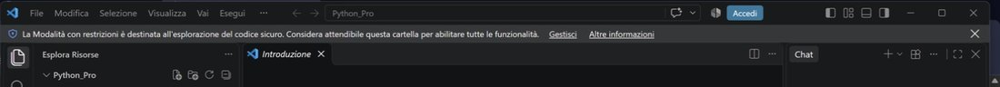
- Clicca Gestisci, poi Aggiungi cartella e scegli
Python_Pro, la cartella madre. - Da quel momento tutte le cartelle delle lezioni dentro
Python_Prosono già fidate e VS Code non chiede più niente.
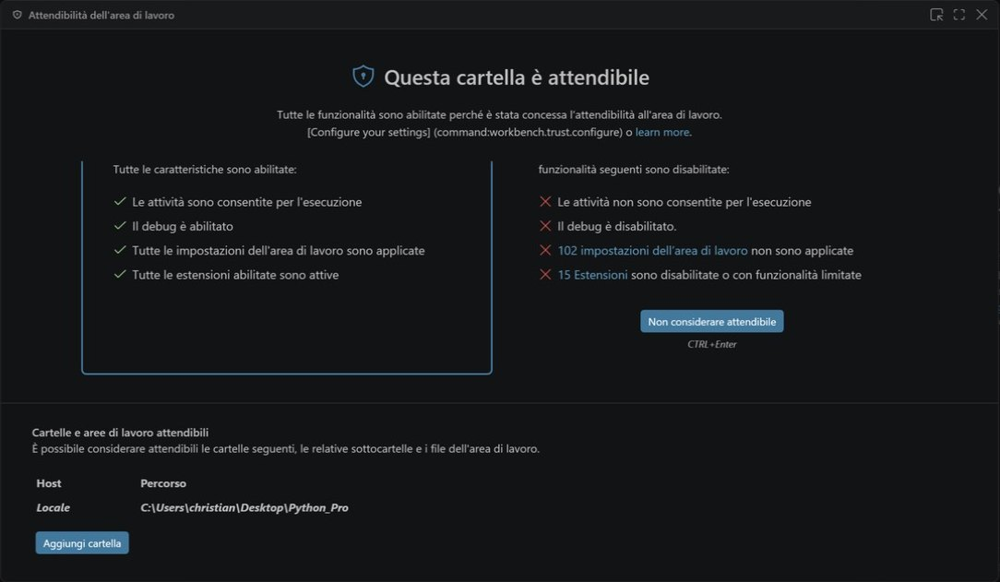
Python_Pro.- Una cartella per ogni lezione, dentro
Python_Pro. - A ogni lezione apri in VS Code solo la cartella di quella lezione, mai
Python_Prointera. - Non tenere aperti i file delle lezioni precedenti. Se ti serve qualcosa di vecchio, copialo come spiegato al passo 10.
Aprendo la cartella, anche il terminale di VS Code (Terminale → Nuovo terminale) parte già lì dentro. Il terminale di Windows, aperto da Start, parte invece da C:\Users\tuonome.
06Account GitHub ed email privata
Prima di installare Git
- Accedi a github.com. Se non hai un account, crealo.
- Vai su github.com/settings/emails.
- Attiva "Keep my email addresses private" e "Block command line pushes that expose my email".
- Nella descrizione della prima opzione c'è un indirizzo del tipo
12345678+tuonome@users.noreply.github.com. Copialo: ti serve al passo 07.
07Installare e configurare Git
Circa 5 minuti. Le schermate sono in inglese
- Vai su git-scm.com/install/windows e scarica Git for Windows/x64 Setup. Non scegliere le versioni "Portable".
- Avvialo e segui la tabella. Tutte le schermate che non compaiono qui: lascia com'è e clicca Next.
| Schermata | Scelta | |
|---|---|---|
| Select Components | Lascia tutto com'è | default |
| Choosing the default editor used by Git | Use Visual Studio Code as Git's default editor | cambia |
| Adjusting the name of the initial branch | Override… → main | cambia |
| Adjusting your PATH environment | Git from the command line and also from 3rd-party software | default |
| Choosing HTTPS transport backend | Use the native Windows Secure Channel library | default |
| Choose a credential helper | Git Credential Manager | default |
| Configuring experimental options | Nessuna spunta | default |
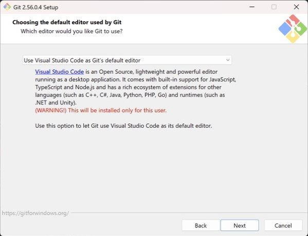
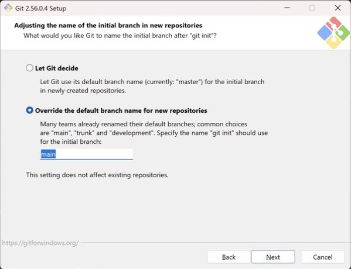
main. Se Git lo chiama master, prima o poi i due non si capiscono.Firma i tuoi commit
- Chiudi VS Code del tutto e riaprilo con tasto destro sulla cartella della lezione → Apri con Code. Così si accorge che Git è installato.
- Apri il terminale (Terminale → Nuovo terminale) e scrivi, con il tuo nome e l'indirizzo noreply copiato al passo 06:
git config --global user.name "Nome Cognome" git config --global user.email "12345678+tuonome@users.noreply.github.com" git config --global --list
L'ultimo comando deve mostrare le righe user.name=… e user.email=….
git config è la firma sulla lettera, il login è la chiave della cassetta postale.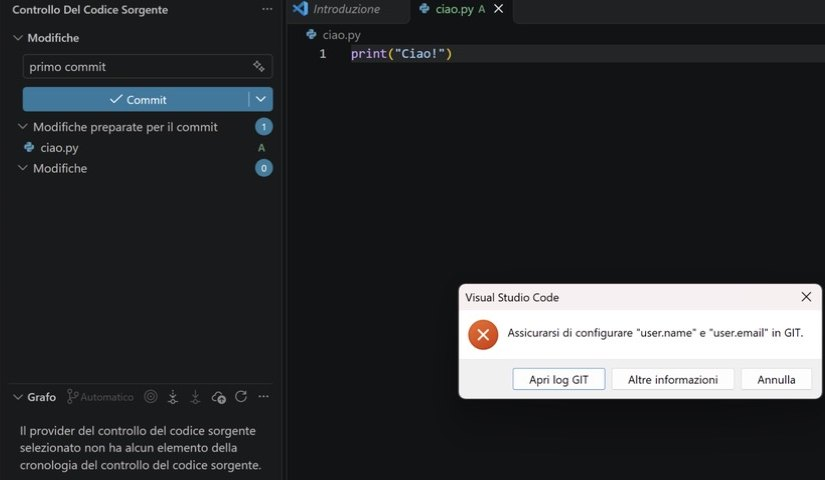
git config.08L'ambiente virtuale di ogni lezione
A ogni lezione nuova, nella cartella della lezione
Ogni lezione ha il suo ambiente: una copia di Python con le sue librerie, separata dalle altre. Questi sono i 5 passi del corso, con le note su cosa vedrai davvero.
I 5 passi del corso
- Cartella e
main.py. Crea la cartella della lezione dentroPython_Pro, aprila con Apri con Code e crea un filemain.pyvuoto. pip install pipenv. L'hai già fatto al passo 03: si fa una volta sola, non a ogni lezione.pipenv shell. Nel terminale di VS Code, controlla prima che il prompt finisca con il nome della lezione.
pipenv shell
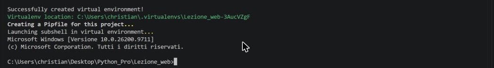
Pipfile e la cartella .venv. Poi pipenv apre il vecchio Prompt dei comandi (la scritta "Microsoft Windows [Versione…]"): il prompt non inizia più con PS e non mostra il nome del progetto tra parentesi. È normale, l'ambiente è attivo lo stesso. Per uscire scrivi exit.- Seleziona l'interprete. Apri
main.py, premi Ctrl+Shift+P, scriviSelezionare interpretee scegli la voce.venv, quella il cui percorso finisce con il nome della tua lezione.
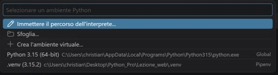
.venv, con etichetta Pipenv. Non scegliere Globale e non cliccare "Crea l'ambiente virtuale…": creerebbe un secondo ambiente che pipenv non conosce.Ricarica finestra, poi riprova. Se ancora non c'è: Immettere il percorso dell'interprete… → scrivi .venv\Scripts\python.exe → Invio.Controlla la barra di stato in basso a destra: deve dire .venv (3.15.x). Se non vedi nessun interprete, è perché il file aperto non è un .py: clicca su main.py.
- Installa le librerie con pipenv, non con pip:
pipenv install flask
Deve dire "Installation Succeeded". Nel Pipfile compare la riga flask = "*" e nasce un nuovo file, Pipfile.lock.
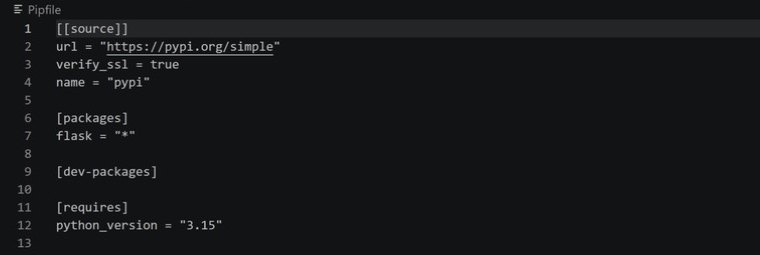
Pipfile: l'elenco delle librerie del progetto. L'asterisco vuol dire "qualsiasi versione".Pipfile.lock è la "ricevuta" con le versioni esatte di tutto quello che è stato installato, anche delle librerie che servono a Flask. Non si modifica a mano. Tieni sempre i due file insieme: su un altro PC basta pipenv install per ricostruire tutto.La scorciatoia
Grazie all'impostazione del passo 03, il passo 3 (pipenv shell) si può saltare: pipenv install flask in una cartella nuova crea da solo Pipfile, .venv e installa Flask. Quindi a ogni lezione bastano:
- cartella nuova → Apri con Code →
main.py; pipenv install flask(o le librerie della lezione);Ricarica finestra→Selezionare interprete→.venv.
Da lì in poi VS Code attiva l'ambiente da solo in ogni terminale nuovo, e il prompt mostra il nome della lezione tra parentesi, per esempio (Lezione_01) PS C:\…>.
Prova che funzioni
Scrivi in main.py (se copi il codice, controlla che la prima riga parta dal margine sinistro):
from flask import Flask
app = Flask(__name__)
@app.route("/")
def home():
return "Funziona!"
app.run(debug=True)Premi ▶ in alto a destra. Nel terminale deve comparire "Running on http://127.0.0.1:5000". Aprilo nel browser: vedrai Funziona!. Per fermare il server, clicca nel terminale e premi Ctrl+C.
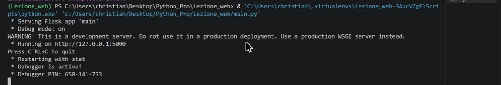
09Salvare la lezione su GitHub
Alla fine di ogni lezione
- Clicca l'icona Controllo del codice sorgente a sinistra (la terza) → Inizializza repository.
- Controlla l'elenco delle Modifiche: ci sono i tuoi file, e
.venvnon c'è. È giusto, Git lo ignora da solo.
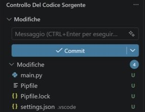
main.py, Pipfile, Pipfile.lock e .vscode/settings.json. Va tutto su GitHub.- Scrivi un messaggio, per esempio
prima versione, e clicca Commit. Se chiede "Preparare tutte le modifiche ed eseguirne il commit direttamente?", clicca Sempre. - Clicca Pubblica Branch.
- La prima volta compare "L'estensione 'GitHub' vuole eseguire l'accesso con GitHub": clicca Consenti.
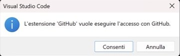
- Nel browser, alla pagina "Authorize Visual Studio Code", leggi il nome accanto a "Signed in as". Se è il tuo account, clicca Continue. Se è quello di qualcun altro, clicca Use a different account.
- Se il browser chiede "Aprire Visual Studio Code?", clicca Apri.
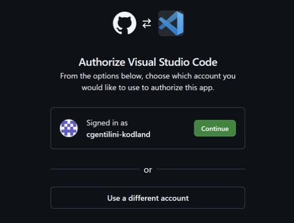
- In VS Code, in alto, il nome del repository è già scritto (è il nome della cartella, e puoi cambiarlo). Sotto, scegli "Publish to GitHub public repository".
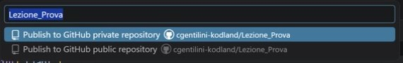
- Solo la prima volta compare una seconda finestra, "Connect to GitHub". È Git che chiede il permesso di caricare i file. Clicca Sign in with your browser, nel browser controlla l'account e clicca Authorize git-ecosystem. Quando vedi "Authentication Succeeded", torna tu a VS Code.
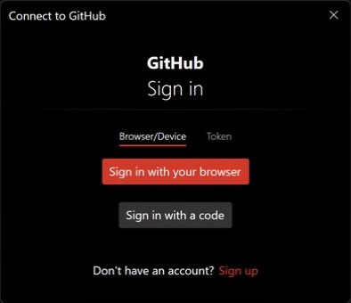
Le volte successive
Modifichi i file → messaggio → Commit → Sincronizza modifiche. La prima volta chiede una conferma su "pull e push": clicca OK, non visualizzare più.
10Riusare file di una lezione precedente
Leggilo prima di copiare qualsiasi cartella
Ogni cartella pubblicata su GitHub contiene una cartella nascosta, .git. È la "memoria" del progetto: tutti i commit e l'indirizzo del repository su GitHub. Se copi la cartella intera di una lezione, copi anche la sua memoria. La copia crede di essere la lezione vecchia: VS Code non propone più "Pubblica", e i tuoi salvataggi finiscono nel repository vecchio o vengono rifiutati.
Il modo giusto
- Crea la cartella della lezione nuova, vuota.
- Entra nella cartella vecchia, seleziona solo i file che ti servono (non la cartella) e copiali dentro quella nuova.
Se hai già copiato la cartella intera
Apri la copia in VS Code e, con il prompt che finisce con il nome della copia, lancia:
git remote -v Remove-Item -Recurse -Force .git
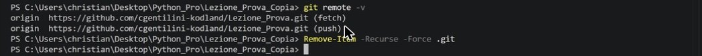
git remote -v mostra a quale repository è collegata la cartella. In una cartella nuova non deve stampare niente. Dopo il secondo comando torna il pulsante "Inizializza repository".In alternativa: Esplora file → Visualizza → Mostra → Elementi nascosti, poi elimina la cartella .git.
Clonare un repository
Se il prof ti chiede di scaricare un repository (Clona repository GIT…), come cartella di destinazione scegli Python_Pro: Git crea da solo la sottocartella. Non creare prima una cartella con lo stesso nome, o ti ritrovi una cartella dentro l'altra.
11Controllare o cambiare account GitHub
Se compare il messaggio del fork o il push viene rifiutato
Il tuo account GitHub è registrato in tre posti, e devono essere tutti uguali:
| Dove | A cosa serve | Come lo vedi |
|---|---|---|
| VS Code | Creare il repository ("Pubblica") | Icona in basso a sinistra |
| Git Credential Manager | Caricare i file (push) | git credential-manager github list |
| Browser | Decide quale account usano gli altri due | Avatar in alto a destra su github.com |
Anche il nome dopo github.com/ in git remote -v deve essere il tuo.
Per cambiare account
- Browser: su github.com esci (avatar → Sign out) e rientra con l'account giusto. Va fatto per primo: il browser ricollega gli altri due in silenzio con l'account che trova.
- Git:
git credential-manager github logout NOME-SBAGLIATO - VS Code: icona in basso a sinistra → account → Esci.
Non serve ricollegarsi a mano. Al prossimo "Pubblica" o "Sincronizza" VS Code e Git chiedono di nuovo l'accesso con le finestre del passo 09. Non usare la voce "Accedere per usare GitHub Copilot".
12Indice degli errori
Cerca il messaggio che vedi
- Python non è stato trovato; eseguire senza argomenti da installare dal Microsoft Store
- Python non è installato, oppure manca la spunta "Add python.exe to PATH". Rifai i passi 01 e 02.
- 'pip' / 'pipenv' non riconosciuto come nome di cmdlet
- Hai il terminale aperto da prima dell'installazione: chiudilo e riaprilo. Se continua, usa
python -m pip install pipenvepython -m pipenv …, poi controlla il passo 02. - L'esecuzione di script è disabilitata nel sistema in uso
- Manca l'impostazione 1 del passo 03.
- Modalità con restrizioni / VS Code non trova Python
- Rendi attendibile
Python_Pro(passo 05). - ModuleNotFoundError: No module named 'flask'
- VS Code sta usando il Python globale. Seleziona l'interprete
.venv(passo 08, punto 4). - Select Python Interpreter (giallo) / .venv non compare nella lista
- Ctrl+Shift+P →
Ricarica finestra, poi seleziona.venv. - IndentationError: unexpected indent (sulla prima riga)
- Il codice copiato ha spazi all'inizio. Seleziona tutto (Ctrl+A) e premi Shift+Tab finché la prima riga parte dal margine.
- You are attempting to remove a virtualenv that Pipenv did not create
- Hai lanciato pipenv con l'ambiente già attivo. Scrivi
deactivatee riprova. - Il prompt mostra >> invece di PS C:\…>
- Il comando è stato incollato spezzato o manca una virgoletta. Premi Ctrl+C e riscrivilo.
- Assicurarsi di configurare "user.name" e "user.email" in GIT
- Fai i comandi
git configdel passo 07. - GitHub repository already exists
- Esiste già un repository con quel nome, magari un tentativo fallito. Cambia nome nel campo in alto, oppure cancella quello vecchio su GitHub (repository → Settings → Delete this repository).
- Non si dispone delle autorizzazioni… Creare invece un fork?
- Clicca Annulla, mai "Crea fork". La cartella è collegata al repository di qualcun altro (passo 10) oppure stai usando l'account sbagliato (passo 11).
- GH007: Your push would publish a private email address
- Hai configurato la tua email vera. Rifai
git config --global user.emailcon l'indirizzo noreply (passo 06). - SSL certificate problem: unable to get local issuer certificate
- Di solito è l'antivirus che controlla le connessioni. Reinstalla Git lasciando "native Windows Secure Channel library" (passo 07).
- This account does not support password sign-in
- Ti sei registrato con Google o Apple: usa "Continue with Google" (passo 06).
- Si apre una schermata nera con delle tilde (~) e non riesci a scrivere
- È Vim. Premi Esc, scrivi
:q!e premi Invio. Poi reinstalla Git scegliendo VS Code come editor. - [notice] A new release of pip is available · WARNING: This is a development server
- Non sono errori. Ignorali.